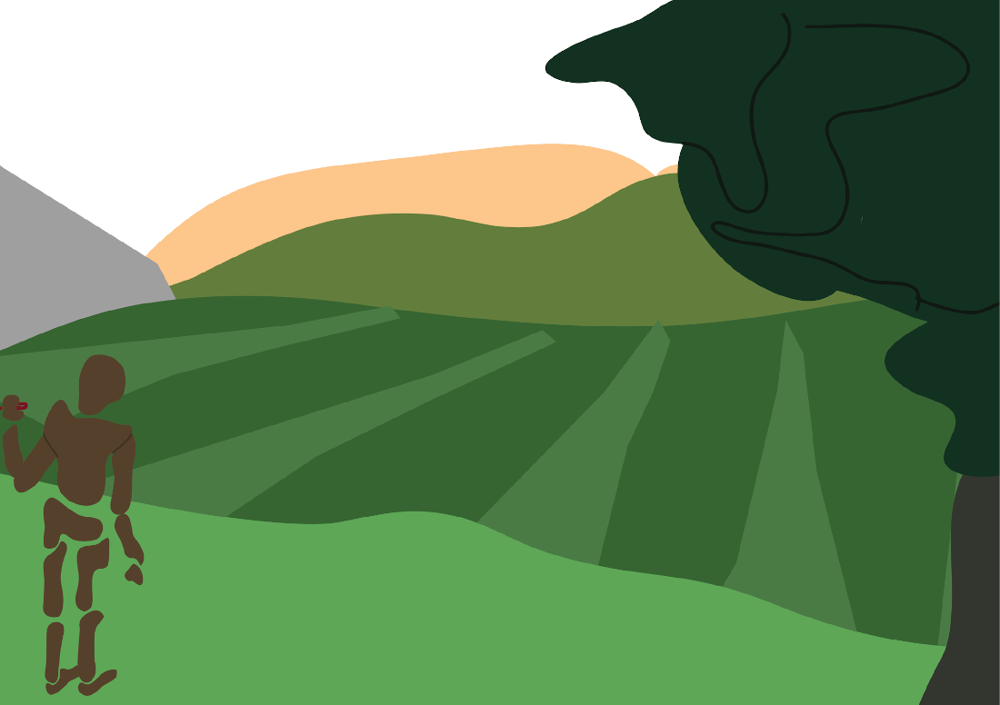

Wszyscy uważamy siebie za indywidualne “Ja” oddzielne od wszystkiego i wszystkich. Ten pająk i ten pies również tak myślą. Każda istota na ziemi pojmuje hierarchie innych istot większych oraz mniejszych od niej. Wszyscy siebie widzimy jako będących środkiem. Czyli jeśli wszyscy są środkiem, to nikt wcale nie jest środkiem?